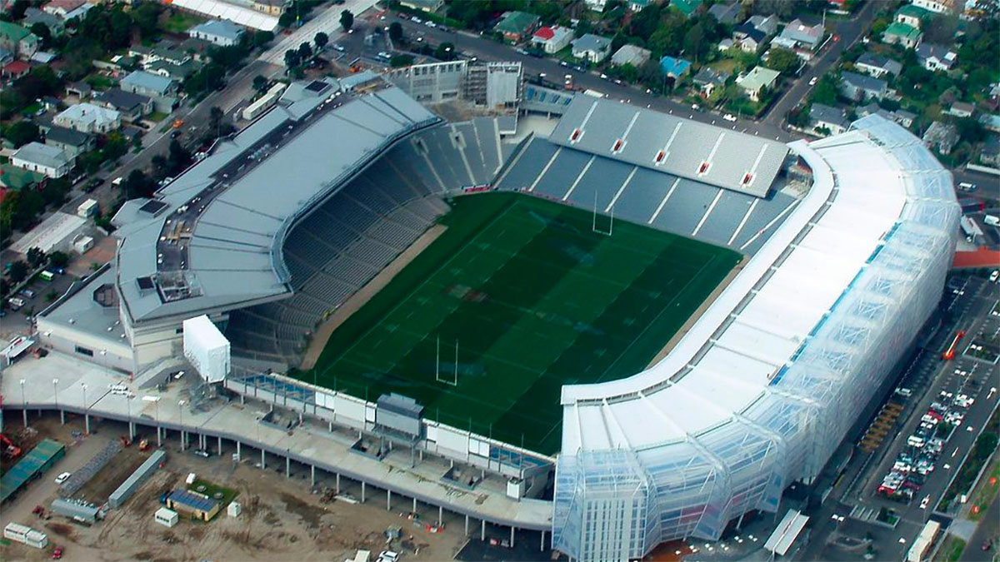
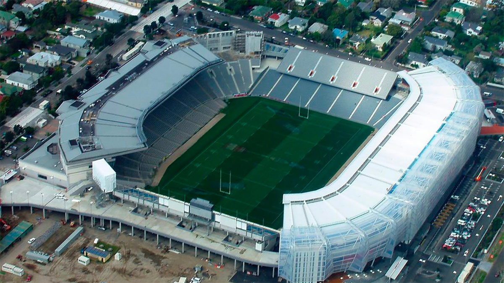

Shanghai, China


Geographical Location: Asia
Shanghai, a vibrant metropolis, is nestled along the eastern coast of China. With a population of over 26 million, it ranks as one of the world's most populous cities and serves as a global financial hub. The cityscape of Shanghai is an exquisite blend of history and modernity, where towering skyscrapers such as the iconic Oriental Pearl Tower and the Shanghai Tower punctuate the skyline alongside historical landmarks like the Bund, a waterfront promenade that showcases colonial-era architecture.
The city has an unparalleled shoppign scene that caters to all tastes, from luxury brands in shiny malls to hidden gems in busy markets. Moreover, Shanghai's culinary landscape is a testament to its multiculturalism, offering a symphony of flavors that range from traditional street food like xiaolongbao (soup dumplings) to avant-garde dining experiences.
Photo Gallery


Aukland, New Zealand


Geographical Location: Oceania/Australia
Auckland is the largest city in New Zealand located on the Northern Island of the country. The city’s population is just below 1.7 million people. Auckland is known as the “City of Sails” for its plethora of sailboats and yachts. The vast amount of waterfronts and harbors are conveniently located for sailors to embark on their hobbies.
Aside from sailing and waterfronts, Auckland is also surrounded by 48 volcanoes and a few rainforests. The climate of Auckland is mild-temperate. The winters are not too cold (averaging 64 degrees Fahrenheit) and summers mildly harsh (around 80 degrees Fahrenheit).
Photo Gallery
 



Banff National Park


Geographical Location: North America
Banff National Park is in Western Canada in the province of Alberta. It is near the city of Calgary and situated in the Rocky Mountains. Banff is known for its mountains and natural beauty, along with its plant and animal life. The national park fuels the tourist industry in Western Canada.
Banff has many attractions within its borders including numerous lakes fed by glaciers creating an iconic turquoise color. Banff also borders numerous other national parks further boosting its attractiveness as a tourist location. Banff’s glaciers have been shrinking and may disappear in the next few decades.
Photo Gallery


Berlin, Germany


Geographical Location: Europe
Berlin, a city of fascinating contrasts, seamlessly blends a storied past with a cutting-edge present. The Brandenburg Gate, an iconic symbol, stands as a reminder of history, while sleek modern architecture shapes the skyline. The city's artistic spirit thrives, evident in vibrant street art, avant-garde galleries, and the East Side Gallery's striking murals on the Berlin Wall's remnants.
Berlin's neighborhoods each offer a distinct flavor. Kreuzberg brims with Bohemian energy, Prenzlauer Berg exudes hipster charm, and Charlottenburg boasts elegance. As the sun sets, Berlin's renowned nightlife awakens. Legendary techno beats pulse through clubs like Berghain, offering an unforgettable nocturnal adventure. From exploring solemn historical sites to savoring culinary delights in bustling markets or finding tranquility in its ample green spaces, Berlin invites you to explore its multifaceted identity, where history dances with innovation at every corner.
Photo Gallery